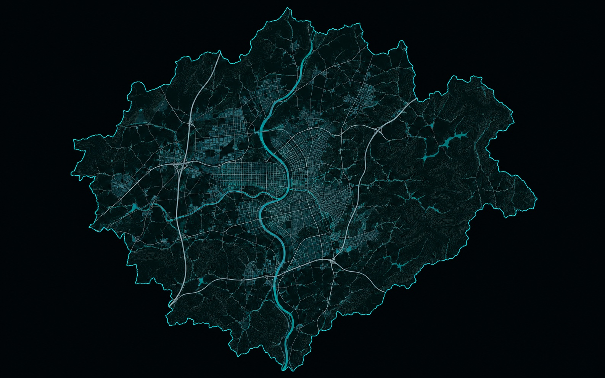

EXHAUST 30 MIN AVG
굴뚝 상부에서 공개되는 물질별 측정 시점과 평균값을 확인합니다.
배출구별 공개값 보기 ↗E.FACT / CHEONGJU ENVIRONMENT
보이지 않는 환경을, 보이는 이야기로.
시설을 고르면 숫자와 흐름이 함께 움직입니다.

↔ 잡아당겨 회전
선택한 사업장
청주시 생활폐기물처리시설자료를 확인하고 있어요.굴뚝 상부에서 공개되는 물질별 측정 시점과 평균값을 확인합니다.
배출구별 공개값 보기 ↗배출가스가 이동하는 굴뚝 구간입니다. 배출구마다 측정 항목이 다를 수 있습니다.
소각과 방지시설 운전이 이어지는 공정 구간을 구조적으로 살펴봅니다.
운전 상태와 자료 시점 확인 ↗사업장 분류와 공개 배출구 수를 확인하고 아래 상세 현황으로 이동합니다.
↔ 잡아당겨 회전 · 시설 위에 올리면 감속 · Zone에 올리면 정지
01 / AT A GLANCE
사업장 하나에 배출구가 여러 개 있을 수 있습니다.
사업장 선택 ↓2020년 자료에 기반한 선정 목록으로, 현재 가동 여부는 별도 확인이 필요합니다. 굴뚝 수치만으로 주변 공기의 안전을 판단하지 않습니다.
TWO DIFFERENT VIEWS
발생 지점의 배출과 생활권에서 관측한 대기질을
같은 수치로 해석하지 않도록 구분했습니다.
시설의 굴뚝에서 나오는 물질을 측정해요.
아래 사업장별 공개 측정 자료02 / LOOK CLOSER
CHOOSE A PLACE
청주 지도 위 시설 핀을 누르면 사업장별 공개 측정값과 오염물질 정보를 이어서 확인할 수 있습니다.
한 번 더 내려 지도를 살펴보세요 ↓FACILITY MAP / CHEONGJU
지도 위 시설 핀을 누르면 선택한 사업장의 배출구별 공개 측정값과 오염물질 상태를 아래에서 바로 확인할 수 있습니다.

공개 주소 좌표 기준 · 배경 지도는 설명용 일러스트이며 측량·법적 경계 자료가 아닙니다.
POLLUTANT × BODY
측면 인체 모형의 반응 지점을 눌러 굴뚝에서 확인하는 다섯 물질의 노출 경로와 민감한 사람을 확인해 보세요.
흡입 경로를 따라 비강과 기도, 폐, 혈액과 심장으로 이어지는 위치를 측면 해부 모형 위에 표시했습니다.
굴뚝 수치 = 개인 노출량은 아닙니다. 배출구의 측정값만으로 주변 주민의 건강 영향을 판단할 수 없습니다. 실제 영향은 농도, 노출 시간, 거리와 기상 조건 등에 따라 달라집니다.
03 / HOW TO READ
측정값을 기준값으로 나눈 비율입니다. 100% 선을 넘으면 그 항목이 기준을 초과했다는 뜻이에요.
ppm과 mg/Sm³처럼 물질마다 단위가 달라요. 원래 수치의 크기만 보고 서로 비교하지 마세요.
자료가 없으면 판단을 미룹니다. 측정 시점과 누락 여부를 함께 확인해 주세요.